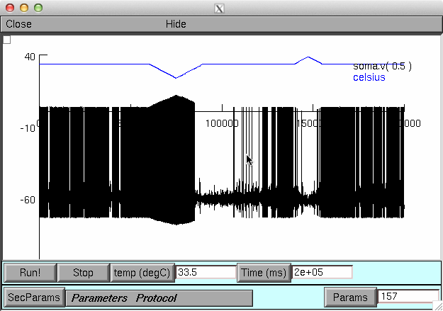
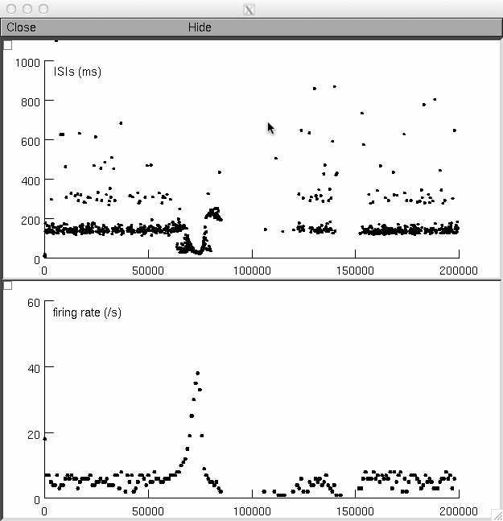

Accompanying model files to the publication: TRPM8-DEPENDENT DYNAMIC RESPONSE IN A MATHEMATICAL MODEL OF COLD THERMORECEPTOR Olivares, E. et al. Accepted for publication in PLoS One, September 2015 Neuron folder ------------- After compiling the supplied .mod files, run mosinit.hoc. A graphical interface will allow to run 5 parameter combinations with 2 different temperature protocols: cold/heat pulse and cold pulse+temperature steps. Voltage trace, firing rate and Interspike-Intervals are plotted. The cold/heat pulse (default simulation) is a mix of Figures 1C and 2B from the paper:   Note that temperature protocols are not identical because the Figures in the paper are done with real temperature recordings while the simulation produces an idealized trace. Python folder ------------- The script 'main.py' will produce a short voltage trace for 34, 30, 26 and 22 degrees C and a firing rate/ISI plot in response to cold and hot pulses. The second simulation is a mix of Figures 1C and 2B from the paper with idealized temperature trace. Change the ParamSet option in lines 182 and/or 191 to explore the behavior of different parameter sets. Both the Neuron and Python codes consider a period of adaptation in which the dynamics of TRPM8 desensitization is transienlty accelerated.